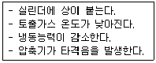
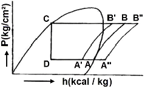
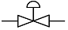
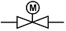
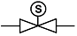
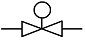

공조냉동기계기능사 (2007-09-16 기출문제)
1과목: 공조냉동안전관리
1. 연삭작업 시 유의 사항으로 옳지 않은 것은?
- 숫돌바퀴에 균열이 있는가 확인 한다.
- 보호안경을 써야 한다.
- 연삭숫돌 작업 시는 작업 시작 전에 15분 이상 시운전을 한 후 이상이 없을 때 작업한다.
- 회전하는 숫돌에 손을 대지 않는다.
(정답률: 91%)

2. 어떤 위험을 예방하기 위하여 사업주가 취해야 할 안정상의 조치로 적당하지 못한 것은?
- 시설에 의한 위험
- 기계에 의한 위험
- 근로 수당에 의한 위험
- 작업방법에 의한 위험
(정답률: 90%)
3. 수리 중 표시를 나타내는 색깔은?
- 녹색
- 백색
- 보라색
- 청색
(정답률: 48%)
4. 소화효과에 대한 설명으로 잘못된 것은?
- 산소공급차단은 제거효과이다.
- 물을 사용하는 소화는 냉각효과이다.
- 불연성가스를 사용하는 것은 질식 효과이다.
- 할로겐 및 알카리 금속을 첨가하여 불활성화 시키는 것은 억제효과이다.
(정답률: 43%)
5. 방류둑에 대한 설명으로 옳은 것은?
- 기화가스가 누설된 경우 저장탱크 주위에서 다른 곳으로서 유출을 방지한다.
- 지하 저장탱크 내의 액화가스가 전부 유출되어도 액면이 지면보다 낮을 경우에는 방류둑을 설치하지 않을 수도 있다.
- 저장탱크 주위에 충분한 안전용 공지가 확보되고 유도구가 있는 경우에 방류둑을 설치한다.
- 비독성가스를 저장하는 저장탱크 주위에는 방류둑을 설치하지 않아도 무방하다.
(정답률: 36%)
6. 가스용접 작업에서 일어날 수 있는 재해가 아닌 것은?
- 화재
- 전격
- 폭발
- 중독
(정답률: 88%)
7. 피뢰기가 구비해야 할 성능조건으로 옳지 않은 것은?
- 반복동작이 가능할 것
- 견고하고 특성변화가 없을 것
- 충격방전개시 전압이 높을 것
- 뇌 전류의 방전능력이 클 것
(정답률: 77%)
8. 컨베이어의 안전장치에 해당 되지 않는 것은?
- 역회전 방지장치
- 비상 정지장치
- 과속 방지장치
- 이탈 방지장치
(정답률: 64%)
9. 안전사고의 발생 요인 중 가장 비율이 높다고 볼 수 있는 것은?
- 불안전한 상태
- 개인적 결함
- 불안전한 행동
- 사회적 결함
(정답률: 74%)
10. 아크 용접작업 시 인적피해로 볼 수 없는 것은?
- 감전으로 인한 사고
- 과대전류에 의한 용접기의 소손
- 스패터 및 슬랙에 의한 화상
- 유해가스에 의한 중독
(정답률: 54%)
11. 산업안전 보건 개선계획에 포함되어야 할 중요한 사항이 아닌 것은?
- 안전보건 관리체제
- 안전보건교육
- 근로자 배치
- 시설
(정답률: 70%)
12. 다음은 보일러의 수압시험을 하는 목적이다. 부적합한 것은?
- 균열의 유무를 조사
- 각종 덮개를 장치한 후의 기밀도 확인
- 이음부의 누설정도 확인
- 각종 스테이의 효력을 조사
(정답률: 83%)
13. 다음 보기의 설명에 해당 되는 것은?

- 액햄머
- 커퍼 플레이팅
- 냉매과소 충전
- 플래쉬 가스 발생
(정답률: 78%)
14. 다음 중 안전장치의 취급에 관한 사항 중 틀리는 것은?
- 안전장치는 반드시 작업 전에 점검한다.
- 안전장치는 구조상의 결함유무를 항상 점검한다.
- 안전장치가 불량할 때에는 즉시 수정한 다음 작업한다.
- 안전장치는 작업 형편상 부득이한 경우엔 일시 제거해도 좋다.
(정답률: 85%)
15. 보호구 사용시 유의사항으로 옳지 않은 것은?
- 작업에 적절한 보호구를 선정한다.
- 작업장에는 필요한 수량의 보호구를 비치한다.
- 보호구는 사용하는데 불편이 없도록 관리를 철저히 한다.
- 작업을 할 때 개인에 따라 보호구는 사용 안 해도 된다.
(정답률: 86%)
2과목: 냉동기계
16. 스크류 압축기의 장점이 아닌 것은?
- 흡입 및 토출밸브가 없다.
- 크랭크샤프트, 피스톤링 등의 마모부분이 없어 고장이 적다.
- 냉매의 압력손실이 없어 체적효율이 향상된다.
- 고속회전으로 인하여 소음이 적다.
(정답률: 70%)
17. 다음 냉매 중에서 흡수식 냉동기에 가장 적합한 냉매는?
- R-502
- 황산
- 암모니아
- R-22
(정답률: 70%)
18. 다음 중 내열도가 450℃이며, 강인한 특징이 있어 고온, 고압 증기용으로 사용되는 것은?
- 석면 조인트 시트
- 합성수지 패킹
- 고무 패킹
- 오일시일 패킹
(정답률: 43%)
19. 압축비에 관한 설명으로 옳은 것은?
- 압축비가 클수록 체적효율이 커진다.
- 압축비의 값은 1을 초과하지 않는다.
- 압축비가 클수록 냉매 단위 중량당의 일량이 커진다.
- 압축비가 클수록 기계열량이 작아지고 냉동능력에는 하등의 영향을 주지 않는다.
(정답률: 43%)
20. 냉동장치에서 전자밸브을 사용하는데 그 사용목적 중 거리가 먼 것은?
- 온도제어
- 냉매, 브라인의 흐름제어
- 습도제어
- 리키드 백(Liquid back)방지
(정답률: 55%)
21. 다음 중 불응축 가스가 주로 모이는 곳은?
- 증발기
- 액분리기
- 압축기
- 응축기
(정답률: 72%)
22. 배관용 아크 용접 탄소강 강관(SPW)에 대한 설명 중 틀린 것은?
- 비교적 사용압력이 낮은 배관에 사용한다.
- 자동 서브머지드 용접으로 제조한다.
- 가스, 물 등의 유체 수송용 이다.
- 관호칭은 안지름×두께 이다.
(정답률: 37%)
23. 다음 중 냉동장치에 관한 설명이 옳지 않은 것은?
- 안전밸브가 작동하기전에 고압차단스위치가 작동하도록 조정한다.
- 온도식 자동 팽창밸브의 감온통은 증발기의 입구측에 붙인다.
- 가용전은 응축기의 보호를 위하여 사용한다.
- 파열판은 주로 터보 냉동기의 저압측에 사용한다.
(정답률: 58%)
24. 기계적인 냉동 방법인 것은?
- 고체의 융해 잠열을 이용하는 방법
- 고체의 승화열을 이용하는 방법
- 기한제를 이용하는 방법
- 증기 압축식 냉동기를 이용하는 방법
(정답률: 81%)
25. 2단 압축 냉동장치에 있어서 중간냉각기의 역할에 관한 사항 중 틀린 것은?
- 증발기에 공급하는 액을 과냉각시켜 냉동효과를 증대시킨다.
- 고압압축기의 흡입가스 압력을 저하시키고 압축비를 증가시킨다.
- 저압압축기의 압축가스의 과열도를 저하시킨다.
- 고압압축기의 흡입가스의 온도를 내리고 냉동장치의 성적계수를 향상시킨다.
(정답률: 45%)
26. 저압수액기와 액펌프의 설치위치로 가장 적당한 것은?
- 저압수액기 위치를 액펌프 보다 약 1.2m정도 높게 한다.
- 응축기 높이와 일정하게 한다.
- 액펌프와 저압수액기 위치를 같게 한다.
- 저압 수액기를 액펌프보다 최소한 5m 낮게 한다.
(정답률: 70%)
27. 왕복 압축기의 용량제어 방법이 아닌 것은?
- 흡입밸브 조정에 의한 방법
- 회전수 가감법
- 안전두 스프링의 강도 조정법
- 바이패스 방법
(정답률: 49%)
28. 브라인의 동파방지 대책이 아닌 것은?
- 동결방지용 온도 조절기 사용
- 브라인 부동액을 첨가 사용
- 응축압력 조정밸브 설치사용
- 단수 릴레이 사용
(정답률: 53%)
29. 온도식 액면 제어밸브에 설치된 전열히터의 용도는?
- 감온통의 동파를 방지하기 위해 설치하는 것이다.
- 냉매와 히터가 직접 접촉하여 저항에 의해 작동한다.
- 주로 소형 냉동기에 사용되는 팽창밸브이다.
- 감온통내에 충전된 가스를 민감하게 작동토록 하기 위해 설치하는 것이다.
(정답률: 36%)
30. 증발온도와 응축온도가 일정하고 과냉각도가 없는 냉동사이클에서 압축기에 흡입되는 상태가 변화했을 때의 P-h선도 중 건조포화압축 냉동사이클은?

- A-B-C-D-A
- A'-B'-C-D-A'
- A"-B"-C-D-A''
- A'-B'-B''-A"-A'
(정답률: 65%)
31. 영국의 마력 1[HP]를 열량으로 환산할 때 맞는 것은?(오류 신고가 접수된 문제입니다. 반드시 정답과 해설을 확인하시기 바랍니다.)
- 102[kcal/h]
- 632[kcal/h]
- 860[kcal/h]
- 641[kcal/h]
(정답률: 50%)
32. 흡수식 냉동장치에서 암모니아가 냉매로 사용될 때 흡수제는 어떤 것인가?
- LiBr
- CaCl2
- NH3
- H2O
(정답률: 62%)
33. 용접강관을 벤딩할 때 구부리고자 하는 관을 바이스에 어떻게 물려야 하는가?
- 용접선을 안쪽으로 향하게 한다.
- 용접선을 바깥쪽으로 향하게 한다.
- 용접선을 위로 향하게 한다.
- 용접선은 방향에 관계없이 물린다.
(정답률: 37%)
34. 다음 중 전자밸브를 나타낸 것은?




(정답률: 41%)
35. 다음 중 이상적인 냉동 사이클은?
- 역 카르노 사이클
- 랭킨 사이클
- 브리튼 사이클
- 스터얼링 사이클
(정답률: 84%)
36. 정전시 조치사항 중 틀린 것은?
- 냉각수 공급을 중단한다.
- 수액기 출구 밸브를 닫는다.
- 흡입밸브를 닫고 모터가 정지한 후 토출밸브를 닫는다.
- 냉동기의 주전원 스위치는 계속 통전 시킨다.
(정답률: 82%)
37. 다음 증발기 중 공기 냉각용 증발기는 어느 것인가?
- 셀엔 코일형 증발기
- 카스케이트 증발기
- 보데로 증발기
- 탱크형 증발기
(정답률: 45%)
38. 냉동기유의 구비조건 중 옳지 않은 것은?
- 응고점과 유동점이 높을 것
- 인화점이 높을 것
- 점도가 적당할 것
- 전기절연 내력이 클 것
(정답률: 57%)
39. 전자밸브(솔레노이드 밸브)에 대한 설명 중 옳은 것은?
- 전자코일에 전류가 흐르면 밸브는 닫힌다.
- 밸브를 수직으로 설치하여야 정상적인 작동을 한다.
- 압력 스위치와 결합시켜 사용할 수 없다.
- 직동 전자밸브에는 밸브 시트 구경의 제한이 없다.
(정답률: 34%)
40. 표준대기압을 0으로 기준하여 측정한 압력은?
- 대기압
- 절대압력
- 게이지 압력
- 진공도
(정답률: 29%)
41. 증발식 응축기를 설치할 경우 불응축 가스의 인출 위치는?
- 가스 헤더
- 액 헤더
- 수액기와 가스 헤더를 연결하는 균압관
- 가스헤더와 증발기를 연결한 균압관
(정답률: 25%)
42. 응축온도가 13℃이고, 증발온도가 -13℃인 이론적 냉동 사이클에서 냉동기의 성적 계수는 얼마인가?
- 0.5
- 2
- 5
- 10
(정답률: 48%)
43. 냉매의 구비조건으로 틀린 것은?
- 저온에서 증발압력이 대기압 이하일 것
- 임계온도가 높고 상온에서 액화 될 것
- 증발잠열이 크고 액체비열이 작을 것
- 증기의 비열비가 작을 것
(정답률: 34%)
44. 전장의 세기와 같은 것은?
- 유전속 밀도
- 전하 밀도
- 정전력
- 전기력선 밀도
(정답률: 67%)
45. 용접접합을 나사접합에 비교한 것 중 옳지 않은 것은?
- 누수가 적고 보수에 비용이 절약된다.
- 유체의 마찰손실이 많다.
- 배관상으로 공간효율이 좋다.
- 접합부의 강도가 크다.
(정답률: 68%)
3과목: 공기조화
46. 공기조화용 덕트 부속기기에서 실내에 설치된 연기감지기로 화재의 초기에 발생된 연기를 탐지하여 덕트를 폐쇄시키므로 다른 구역으로 연기의 침투를 방지해주는 부속기기는 무엇인가?
- 방연 댐퍼
- 챔버
- 방수 댐퍼
- 풍량조절 댐퍼
(정답률: 80%)
47. 개별공조방식의 특징이 아닌 것은?
- 국소적인 운전이 자유롭다.
- 실내에 유닛의 설치면적을 차지한다.
- 외기냉방을 할 수 있다.
- 취급이 간단하다.
(정답률: 71%)
48. 공기조화기의 냉각코일 용량을 구할 때 관계가 없는 것은?
- 송풍량
- 재열부하
- 외기부하
- 배관부하
(정답률: 35%)
49. 온수난방장치의 체적이 700ℓ이다. 이 경우 개방식 팽창탱크의 필요 체적은 약 몇 ℓ인가?(단, 초기수온은 5℃, 보일러 운전시 수온을 80℃로 하고 각각의 온도에 대한 물의 밀도는 0.99999kg/ℓ 및 0.97183kg/ℓ로 하며, 개방식 팽창탱크의 용량은 온수팽창 탱크의 2배로 한다.)
- 40.5
- 41.2
- 43.5
- 45.7
(정답률: 22%)
50. 어떤 실의 난방부하가 5000kcal/h일 때 저압증기 방열기의 방열면적은 몇 m2인가?
- 4.5
- 6.6
- 7.7
- 8.8
(정답률: 43%)
51. 다음은 이중 닥트방식에 대한 설명이다. 옳지 않은 것은?
- 실의 냉난방 부하가 감소되어도 취출공기의 부족현상은 없다.
- 실내부하에 따라 각실 제어나 존(zone)별 제어가 가능하다.
- 열매가 공기이므로 실온의 응답이 빠르다.
- 단일 닥트방식에 비해 에너지소비량이 적다.
(정답률: 60%)
52. 설치가 쉽고, 설치면적도 적으며 소규모 난방에 많이 사용되는 보일러는?
- 입형 보일러
- 노통 보일러
- 연관 보일러
- 수관보일러
(정답률: 57%)
53. 가정의 주방이나 가스레인지 상부측 후드를 이용하여 배기하는 환기법은?
- 국부환기, 제3종 환기법
- 전체환기, 제3종 환기법
- 국부환기, 제2종 환기법
- 전체환기, 제2종 환기법
(정답률: 50%)
54. 벽체로부터의 취득열량(q)을 산출하는 식으로 옳은 것은?(단, K : 열통과율, △te : 상당외기온도차, A : 벽면적)
- q = △te · A · (1/K)
- q = K · △te · A
- q = K · A · (1/△te)
- q = K · △te · (1/A)
(정답률: 48%)
55. 실리카겔, 활성알루미나 등의 고체를 사용하여 공기의 수분을 제거하는 감습방법은?
- 냉각감습
- 압축감습
- 흡수감습
- 흡착감습
(정답률: 58%)
56. 다음 중 보건용 공기조화에 해당되지 않는 것은?
- 전자계산기실의 공기조화
- 일반사무실의 공기조화
- 백화점의 공기조화
- 주택의 공기조화
(정답률: 77%)
57. 공기를 가열했을 때 감소하는 것은?
- 엔탈피
- 절대습도
- 상대습도
- 비체적
(정답률: 60%)
58. 공조설비비 중 차지하는 비율(%)이 가장 큰 것은?
- 냉동기 설비
- 공기조화기 및 덕트
- 보일러 설비
- 냉각탑 설비
(정답률: 69%)
59. 다음 중 고속에서도 비교적 정숙한 운전을 할 수 있는 것은?
- 다익 송풍기
- 리밋 로드 송풍기
- 터보 송풍기
- 관류 송풍기
(정답률: 53%)
60. 수조내의 물이 진동자의 진동에 의해 수면에서 작은 물방울이 발생되어 가습되는 가습기의 종류는?
- 초음파식
- 원심식
- 전극식
- 진동식
(정답률: 62%)